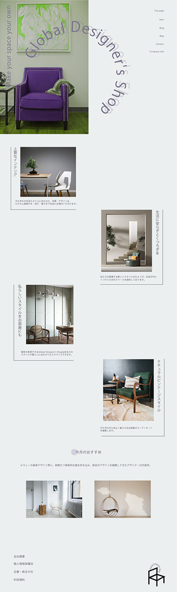
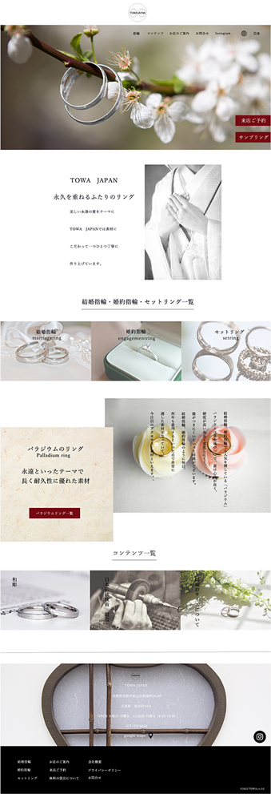
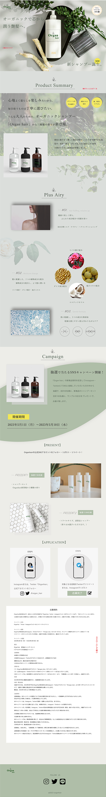
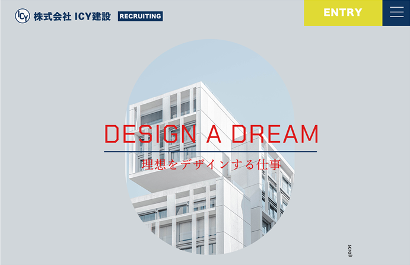
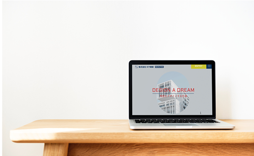
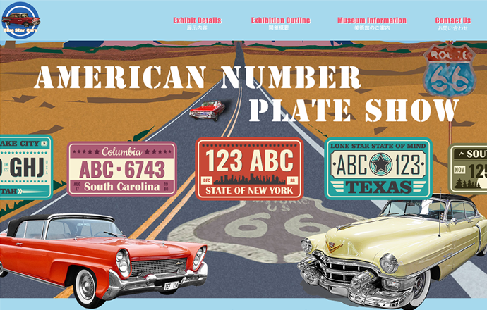

#01
タイトル : Global Desingers Shop
ターゲット : おしゃれな30代半ばの独身女性
ペルソナ : 都内ひとり暮らしの感度の高い女性 人と一緒のモノを好まない
インテリアが好きでデザインに拘りがある
コンバージョン : お店の周知
ターゲット層の洗礼された30代に寄せて、サイト全体の配色を
落ち着いた色味で、なるべく感覚で見てもらえるようなサイトにする為に文字量は減らして、
画像を多く使いお店の雰囲気を一目でわかるようなデザインを意識しました。
企画時間：2.5h
制作時間：4h
制作時期：2023年1月
担当箇所：企画 立案 構成 デザイン
#02
タイトル : TOWA JAPAN
ターゲット : 30代前半 婚約中の恋人 新婚夫婦
ペルソナ : 神前式で式をあげるような、和のテイストが好み真面目でこだわりの強い
デザインコンセプト : 商品価格は比較的に安価で親しみやすい、和で洗礼されたデザイン
コンバージョン : お店の周知
ターゲット層の洗礼された30代に向けたサイトになるように、
和テイストに意識しながら色合いやフォントを選びました。
企画時間：2.5h
制作時間：4h
制作時期：2023年1月
担当箇所：企画 立案 構成 デザイン
#03
タイトル : Organ hair
ターゲット : 20代半ばから30歳の美容にこだわりある女性
ペルソナ : 素材にこだわりを持ち、エコ気質な女性
デザインコンセプト : 爽やかでオーガニックな雰囲気 女性のマス層、万人受けのデザイン
コンバージョン : サンプル賞品の申込み
（Instagram、Twitterに投稿で抽選30名様限定で新商品プレゼントキャンペーン）
既存ブランドから新商品シャンプーのLPサイトを制作しました。
オーガニックシャンプーの点を意識して、カラー設定はメインの
カラーを淡いグリーンにし、他には、植物の画像を取り入れて
感覚的に見て「オーガニック」とわかりやすい雰囲気を出しました。
文字のフォントも女性に向け、柔らかい印象を意識しています。
企画時間：6h
制作時間：36h
制作時期：2023年3月
担当箇所：企画 立案 構成 デザイン
#04
 タイトル : ICY株式会社
ターゲット : 18歳から24歳くらいの就職活動中の新卒の男性・女性
ペルソナ : 建築関係の専門、大学を卒業している
建築関係の仕事に興味があり、就職活動中
デザインコンセプト : 安心感がある中で、新卒向けである為
誠実さ、スタイリッシュさを感じつつ固くなりすぎないデザイン
コンバージョン : 会社ENTRY
新卒向けリクルートサイトを制作しました。
男性の就活生が8割くらいを占める会社として、男性向けに
力強い印象を心かけて、フォントやフォントサイズなど
雰囲気にあうように設定しました。
企画時間：7h
制作時間：40h
制作時期：2023年4月
担当箇所：企画 立案 構成 デザイン
#05
タイトル : アメリカンナンバープレートショー
ターゲット : 1970年生まれの第2次ベビーブーム世代を中心にその親世代や
子世代と共に古き良きアメリカを体感したいと思っているファミリー
ペルソナ : アメリカの影響を受けている第1次ベビーブーム世代を親に持っている。
自分もアメリカンポップを好み、親→自分→子と3世代でアメリカンクラッシックを
堪能したいと思っている。
デザインコンセプト : 爽やかでオーガニックな雰囲気 女性のマス層、万人受けのデザイン
コンバージョン : サンプル賞品の申込み
（Instagram、Twitterに投稿で抽選30名様限定で新商品プレゼントキャンペーン）
既存ブランドから新商品シャンプーのLPサイトを制作しました。
オーガニックシャンプーの点を意識して、カラー設定はメインの
カラーを淡いグリーンにし、他には、植物の画像を取り入れて
感覚的に見て「オーガニック」とわかりやすい雰囲気を出しました。
文字のフォントも女性に向け、柔らかい印象を意識しています。
企画時間：10h
制作時間：16h
制作時期：2023年5月
担当箇所：企画 立案 構成 デザイン
（訓練校グループ制作）